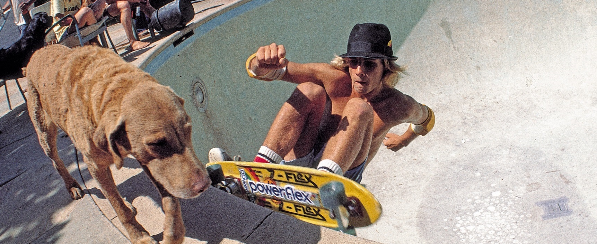
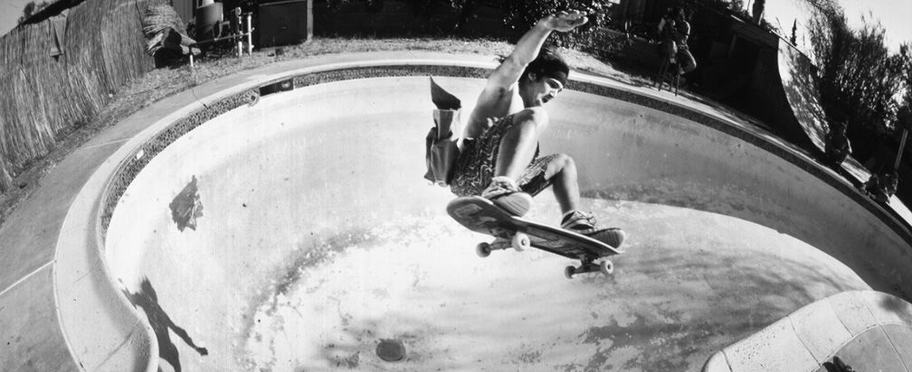

Jay Adams
Fue un skater y surfista originario de Santa Mónica, California.

Días de Pool
Ante la sequia de agua, se crearon las sesiones de Skate en piletas vacias.

Skate or Die
Durante las sesiones, la mayoria terminaba preso por invasion de propiedad